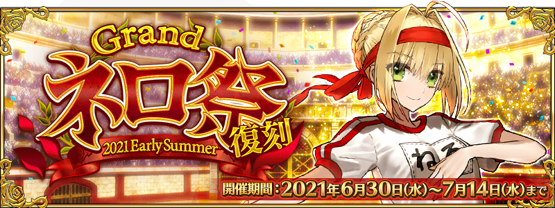
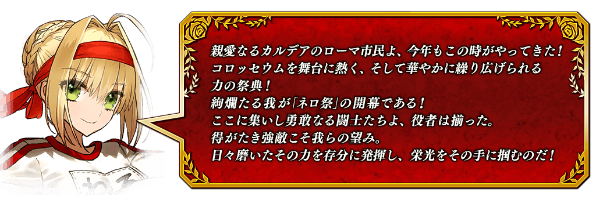 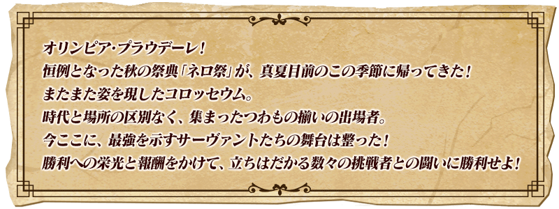
本活動是再調整在2017年舉辦的期間限定活動「尼祿祭再臨！ ～2017 Autumn～」使之更容易遊玩的「復刻活動」。
舉辦期間限定活動「復刻:Grand尼祿祭 ～2021 Early Summer～」！
那個尼祿祭經過3年時間回歸了！
打敗在座的從者們，用手抓住名為勝利的的光榮吧！
活動中會出現2種活動關卡！
挑戰跟從者戰鬥的大會關卡，能獲得可交換豪華報酬的活動道具。
另外，挑戰無法接關的超高難易度戰鬥的展演關卡通過的話，也可獲得豪華報酬！
並且，除了以各關卡入手的活動收集道具交換各種報酬外，還可挑戰得到各式各樣道具的抽選！
由於抽選次數沒有上限能進行無數次，各關卡中收集活動道具來入手豐富多樣的商品吧！
※本頁面皆為開發中圖片。會有與實際圖片相異的情況。 ※一部份的關卡為日後開放。
◆活動舉辦期間◆
2021年6月30日(三) 17:00～7月14日(三) 11:59
◆活動參加條件◆
滿足以下條件的御主才能參加
・通過「特異點F 炎上汙染都市 冬木」
◆上次舉辦時及「靈衣縫製」「稀有稜鏡交換」有獲得對象靈衣情況的注意◆ 在2017年舉辦的期間限定活動「尼祿祭再臨 ～2017 Autumn～」及「靈衣縫製」「稀有稜鏡交換」獲得過「★4(SR)尼祿・克勞狄烏斯(Saber)」靈衣「奧林匹亞的體操服」的情況，將會有以下的變化。 ・在上次舉辦時靠活動報酬獲得過「靈衣開放權」情況，本活動的獎品抽選中可獲的稀有稜鏡代替「靈衣開放權」。 ・在「靈衣縫製」及「稀有稜鏡交換」交換過對象靈衣情況，在本活動入手對象靈衣時會返回稀有稜鏡5個到禮物箱。
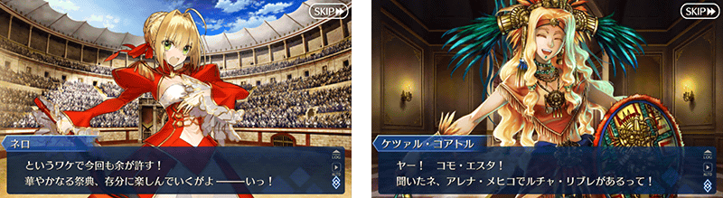
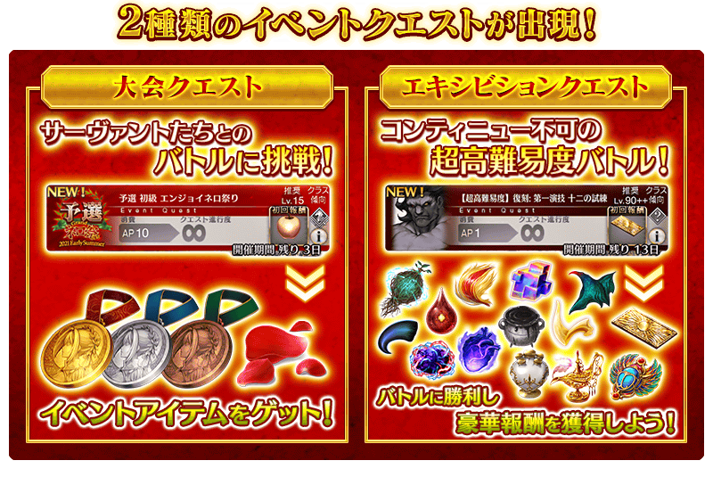

期間中，會出現活動限定的「大會關卡」。
「大會關卡」中，會根據難易度變化對戰從者！
另外，透過時間表的進行會變更預選賽、正賽、決賽與關卡的內容。
並且，「復刻:Grand尼祿祭 ～2021 Early Summer～」中新追加最上位級的霸者級！
挑戰多樣的關卡來獲得尼祿獎章和真紅的花瓣吧！
| 尼祿祭預選賽 | |
|---|---|
| 舉辦期間 | 6月30日(三) 17:00～7月4日(日) 17:59 |
| 消耗AP | 初級(AP10)、中級(AP20)、上級(AP30)、超級(AP40)、勇者級(AP40)、王者級(AP40) 【復刻版追加要素】霸者級(AP40) |
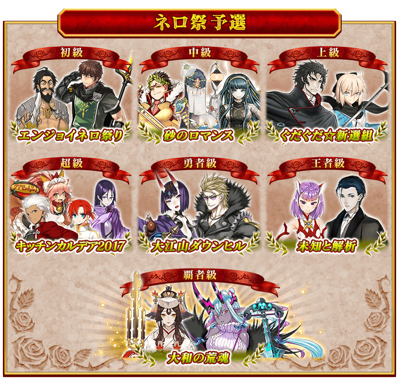
| 尼祿祭正賽 | |
|---|---|
| 舉辦期間 | 7月4日(日) 17:00～7月9日(五) 17:59 |
| 消耗AP | 初級(AP10)、中級(AP20)、上級(AP30)、超級(AP40)、勇者級(AP40)、王者級(AP40) 【復刻版追加要素】霸者級(AP40) |
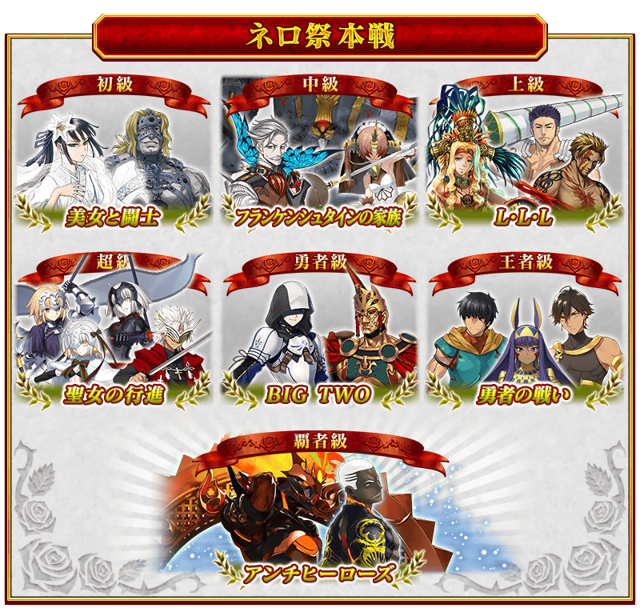
| 尼祿祭決賽 | |
|---|---|
| 舉辦期間 | 7月9日(五) 17:00～7月14日(三) 11:59 |
| 消耗AP | 初級(AP10)、中級(AP20)、上級(AP30)、超級(AP40)、勇者級(AP40)、王者級(AP40) 【復刻版追加要素】霸者級(AP40) |
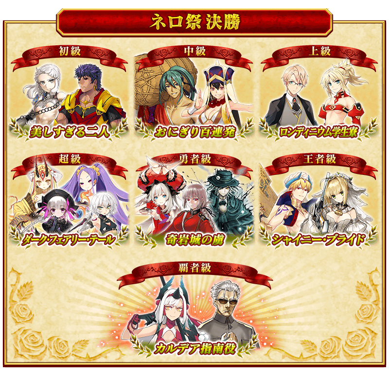
對上使用特殊技能等持有與平常相異攻擊方式的敵人，附有無法接關限制的挑戰超高難易度關卡。
通過關卡的話可獲得呼符等豪華報酬。
另外，在一部份展演關卡有隊伍的編成限制。
進行隊伍編成時，有與隊伍成員同個支援從者的情況，會變得無法出擊。
※隊伍的編成制限是同名的從者就算稀有度或職階不同和名稱附有〔Alter〕情況也能編成。 ※活動期間中，關卡將逐日開放。 ※展演關卡就算在通過後也不會消失，能無數次挑戰。 ※關卡通過報酬、戰利品、御主EXP、魔術禮裝EXP、絆點數只可在初次通過時獲得。
【尼祿祭再臨 ～2016 Autumn～ 復刻展演關卡】
| 關卡名 | 舉辦期間 | 通過報酬 |
|---|---|---|
| 【超高難易度】復刻:第一演技 |
6月30日(三) 17:00～ 7月14日(三) 11:59 |
戰馬的幼角×5、呼符×1 |
| 【超高難易度】復刻:第二演技 | 黑獸脂×5、呼符×1 | |
| 【超高難易度】復刻:第三演技 |
7月1日(四) 17:00～ 7月14日(三) 11:59 |
精靈根×5、呼符×1 |
| 【超高難易度】復刻:第四演技 | 蠻神心臟×5、呼符×1 | |
| 【超高難易度】復刻:第五演技 |
7月2日(五) 17:00～ 7月14日(三) 11:59 |
血之淚石×5、呼符×1 |
| 【超高難易度】復刻:第六演技 | 龍之逆鱗×5、呼符×1 | |
| 【超高難易度】復刻:終演 |
7月3日(六) 17:00～ 7月14日(三) 11:59 |
傳承結晶×1、呼符×1 |
|
【超絕難易度】復刻:終演 prototype |
呼符×1 |
【尼祿祭再臨 ～2017 Autumn～ 復刻展演關卡】
| 關卡名 | 舉辦期間 | 通過報酬 |
|---|---|---|
| 【超高難易度】第一演技 |
7月4日(日) 17:00～ 7月14日(三) 11:59 |
混沌之爪×5、呼符×1 |
| 【超高難易度】第二演技 |
7月5日(一) 17:00～ 7月14日(三) 11:59 |
原初的產毛×5、呼符×1 |
| 【超高難易度】第三演技 |
7月6日(二) 17:00～ 7月14日(三) 11:59 |
封魔之燈×5、呼符×1 |
| 【超高難易度】第四演技 |
7月7日(三) 17:00～ 7月14日(三) 11:59 |
奇奇神酒×5、呼符×1 |
| 【超高難易度】第五演技 |
7月8日(四) 17:00～ 7月14日(三) 11:59 |
智慧之聖甲蟲像×5、呼符×1 |
| 【超高難易度】第六演技 |
7月9日(五) 17:00～ 7月14日(三) 11:59 |
咒獸膽石×5、呼符×1 |
| 【超高難易度】終演 |
7月10日(六) 17:00～ 7月14日(三) 11:59 |
傳承結晶×1、呼符×1 |
|
【復刻版追加要素】 【超絶難易度】終演 Encore |
7月10日(六) 17:00～ 7月14日(三) 11:59 |
呼符×1 |
※「【超絶難易度】終演 Encore」並非完全新關卡，是調整在2017年舉辦的「尼祿祭再臨 ～2017 Autumn～」展演關卡「【超高難易度】終演」的ATK/H使難易度加強的挑戰要素。
※6月29日(二) 11:45圖片修正
下述的期間中，在進行從者及概念禮裝的強化時，大成功(經驗值2倍加成)・極大成功(經驗值3倍加成)發生機率以期間限定變成2倍！
務必藉此機會強化中意的從者和概念禮裝吧！
◆舉辦期間◆
2021年6月30日(三) 17:00～7月14日(三) 11:59
在活動關卡收集「真紅的花瓣」，於獎品抽選交換獎品吧！
獎品的交換是以抽選方式進行。
獎品的陣容會各放入1個大獎道具。
抽到所有的道具，點擊「獎品重置」的話，會補充新的大獎道具，切換到下個陣容。
放入大獎道具獎品的陣容有10次份！
包含大獎道具的所有獎品都沒了的話，點擊「獎品重置」來補充大獎道具吧！
※獎品抽選的第1次～第10次，抽到大獎道具後會顯示「獎品重置」。 ※第11次以後，在所有的獎品都沒了時會顯示「獎品重置」。 ※第11次以後，不會補充大獎道具及「黃金果實」「白銀果實」。 ※交換期間結束後「真紅的花瓣」會消失。
◆交換期間◆
2021年6月30日(三) 17:00～7月21日(三) 11:59
◆獎品陣容◆
【大獎道具】
| 陣容次數 | 大獎道具 | |
|---|---|---|
| 第1次～第5次 | 活動限定概念禮裝★5(SSR)「二神三脚」 | |
| 第6次 | 靈衣「奧林匹亞的體操服」開放權 | |
| 第7次～第10次 |

|
英靈結晶・日輪之芙芙ALL★4(ATK) |
| 第11次 | 無(入手全道具才會獎品重置) | |
※在2017年舉辦的期間限定活動「尼祿祭再臨 ～2017 Autumn～」中有獲得靈衣開放權的情況，在真紅的花瓣交換畫面的靈衣開放權會置換成稀有稜鏡。 ※在「靈衣縫製」及「稀有稜鏡交換」交換過對象靈衣情況，在本活動入手對象靈衣時會返回稀有稜鏡5個到禮物箱。
【其他獎品】
| 種類 | 獎品 |
|---|---|
| 技能強化＆靈基再臨素材 |
禁斷書頁 大騎士勳章 英雄之證 愚者之鎖 虛影之塵 |
| 技能強化素材 |
剣之秘石 弓之秘石 槍之秘石 騎之秘石 術之秘石 殺之秘石 狂之秘石 剣之魔石 弓之魔石 槍之魔石 騎之魔石 術之魔石 殺之魔石 狂之魔石 剣之輝石 弓之輝石 槍之輝石 騎之輝石 術之輝石 殺之輝石 狂之輝石 |
| 其他道具 |
睿智的猛火ALL★4(SR) 睿智的大火ALL★3(R) 黃金果實 白銀果實 赤銅果實 魔力稜鏡 友情點數 QP |
期間限定活動「復刻:Grand尼祿祭 ～2021 Early Summer～」中，可在獎品抽選入手「★4(SR)尼祿・克勞狄烏斯(Saber)」的靈衣開放權。
想開放「★4(SR)尼祿・克勞狄烏斯(Saber)」的靈衣「奧林匹亞的體操服」」的話，除了靈衣開放權外再加上需要開放條件與一些素材。
※在2017年舉辦的期間限定活動「尼祿祭再臨 ～2017 Autumn～」中有獲得靈衣開放權的情況，在真紅的花瓣交換畫面的靈衣開放權會置換成稀有稜鏡。 ※在「靈衣縫製」及「稀有稜鏡交換」交換過對象靈衣情況，在本活動入手對象靈衣時會返回稀有稜鏡5個到禮物箱。
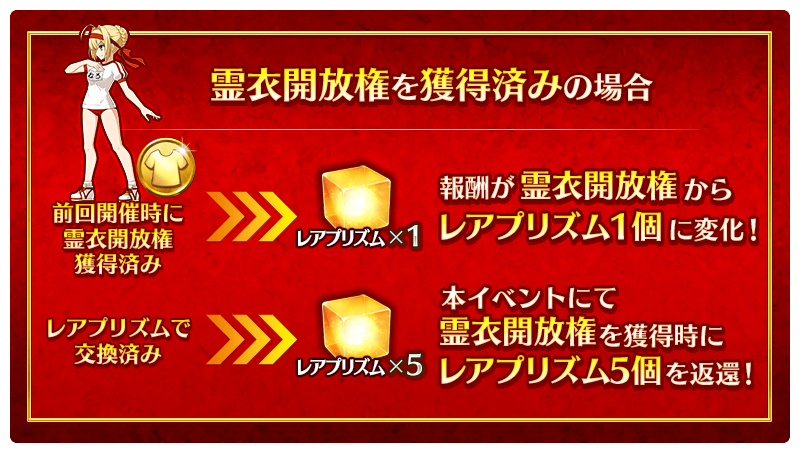
◆有關靈衣開放權的注意◆
※「★4(SR)尼祿・克勞狄烏斯(Saber)」的靈衣一部份語音會隨著外觀變化。
※請注意未持有「★4(SR)尼祿・克勞狄烏斯(Saber)」的情況，可入手靈衣開放權。但無法進行靈衣開放。
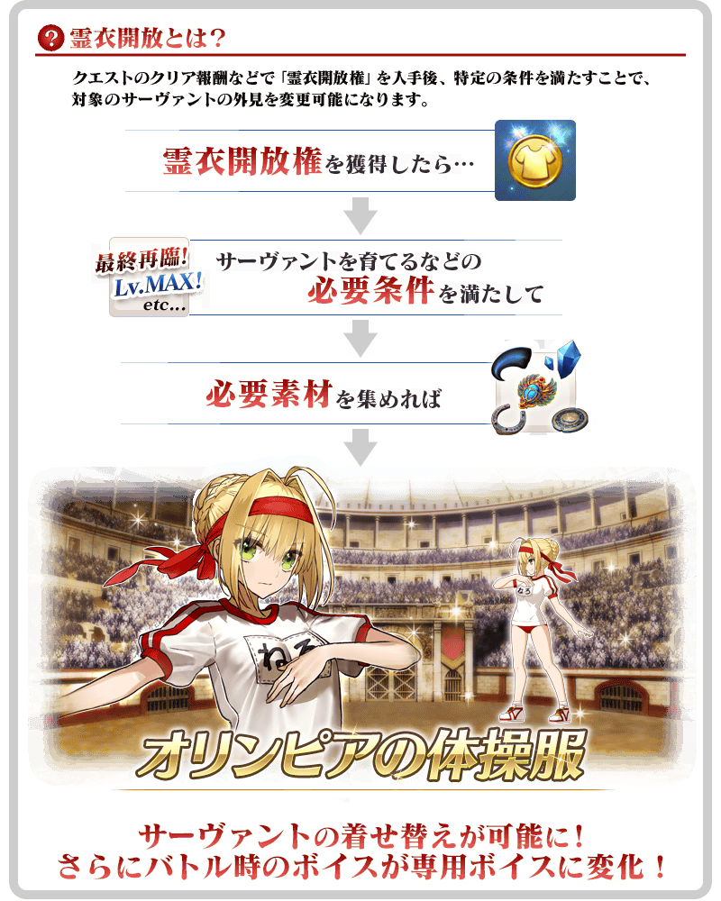

「靈衣開放」是自強化畫面進行。
※「靈衣開放」後會自動切換戰鬥角色和圖示。若想回到「靈衣開放」前的狀態和變成其他再臨階段的情況，可自從者詳細畫面變更。 ※進行「靈衣開放」不會讓職階和能力等有所變化。
介紹開放靈衣「奧林匹亞的體操服」的「★4(SR)尼祿・克勞狄烏斯(Saber)」寶具演出！
裝備活動限定概念禮裝與期間限定概念禮裝的話，在活動中會受到各式各樣的恩惠。
裝備可靠獎品抽選入手的活動限定概念禮裝「★5(SSR)二神三脚」的話，在期間限定活動「復刻:Grand尼祿祭 ～2021 Early Summer～」中會讓自身的攻擊威力提升。
另外，裝備可靠活動道具交換入手的活動限定概念禮裝「★5(SSR)チア・フォー・マスター」後會讓活動道具「真紅的花瓣」的掉落獲得數提升！
並且，裝備在聖晶石召喚Pick Up的期間限定概念禮裝「★5(SSR)バトル・オリンピア」「★4(SR)フード・コロシアム」「★3(R)マッスル・キャバリエ」的話，會讓活動道具「尼祿獎章〔金〕」「尼祿獎章〔銀〕」「尼祿獎章〔銅〕」各自的掉落獲得數提升。
※請注意各關卡的道具掉落率並非100％。
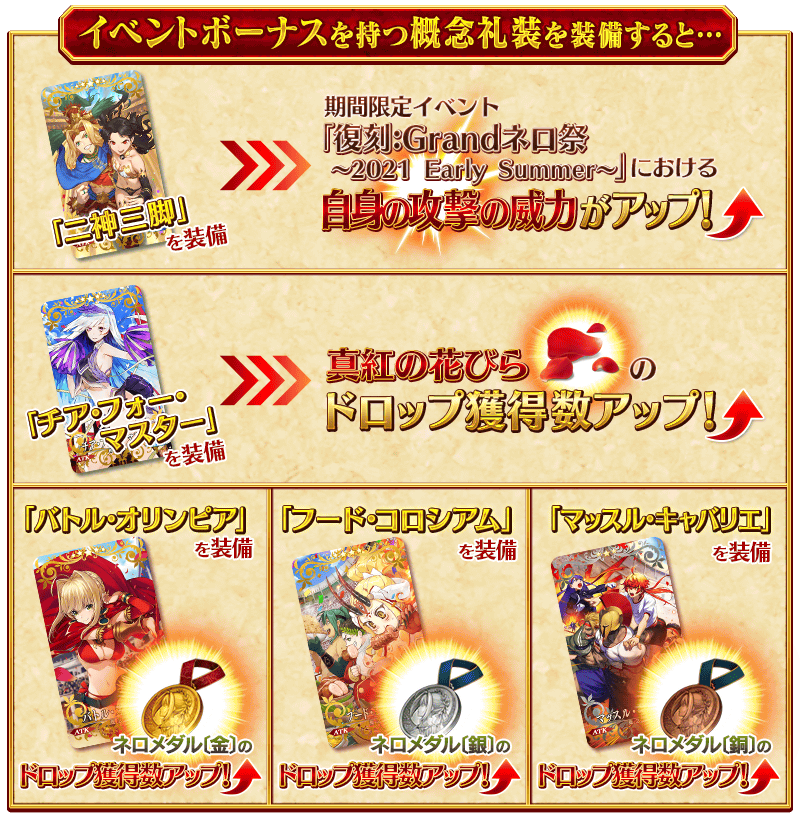
| 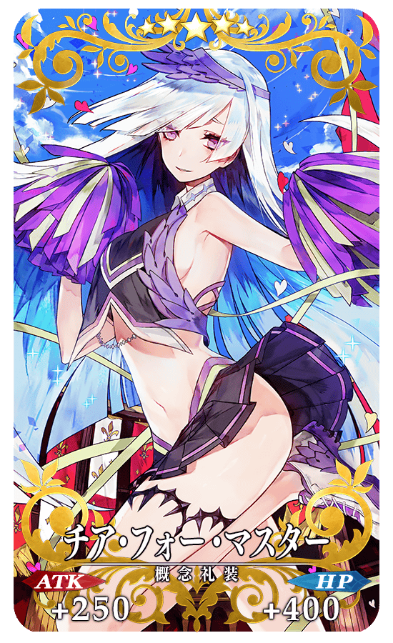 |
★★★★★SSR
|

| 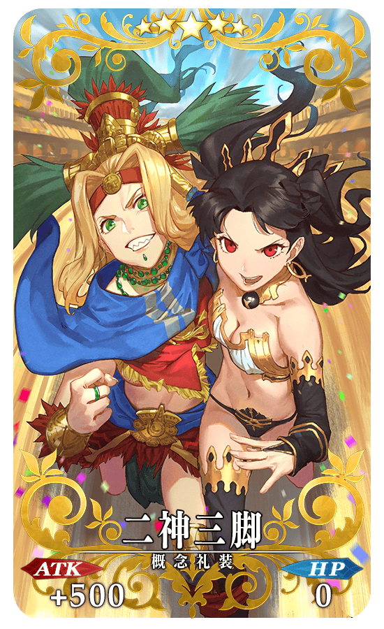 |
★★★★★SSR |
活動道具可自點擊管理室(ターミナル)畫面右上「活動報酬」的「活動道具交換」畫面，交換以下的道具。
※關於英靈結晶・流星之芙芙ALL★4(HP)，進行日後開放的本活動主線關卡的話才能交換。
◆交換期間◆
2021年6月30日(三) 17:00～7月21日(三) 11:59
※活動道具交換期間結束後「真紅的花瓣」「尼祿獎章〔金〕」「尼祿獎章〔銀〕」「尼祿獎章〔銅〕」會消失。
◆能用尼祿獎章〔金〕交換的道具◆
|
【活動限定概念禮裝】 【技能強化＆靈基再臨素材】 【靈基再臨素材】 【其他道具】 |
◆能用尼祿獎章〔銀〕交換的道具◆
|
【活動限定概念禮裝】 【技能強化＆靈基再臨素材】 【靈基再臨素材】 【其他道具】 |
◆能用尼祿獎章〔銅〕交換的道具◆
|
【活動限定概念禮裝】 【技能強化＆靈基再臨素材】 【其他道具】 |
其他還有期間限定「復刻 Grand尼祿祭 ～2021 Early Summer～Pick Up召喚(每日交替)」同時舉辦！
關於詳情，請自下述橫幅確認。